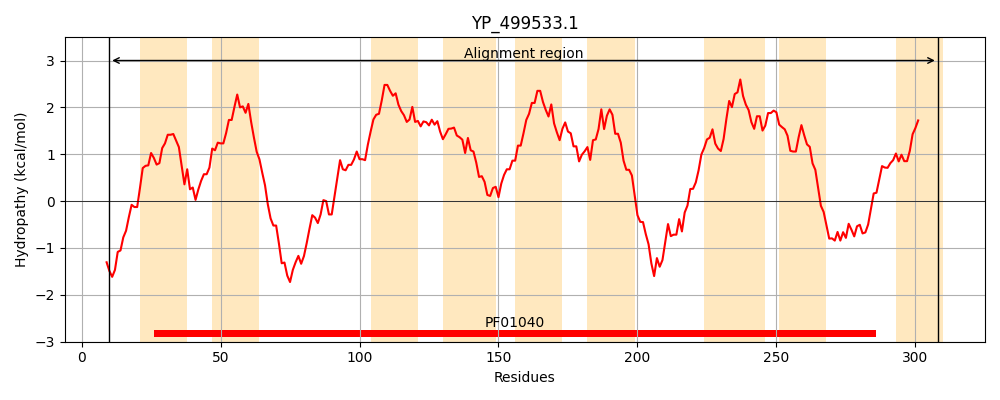
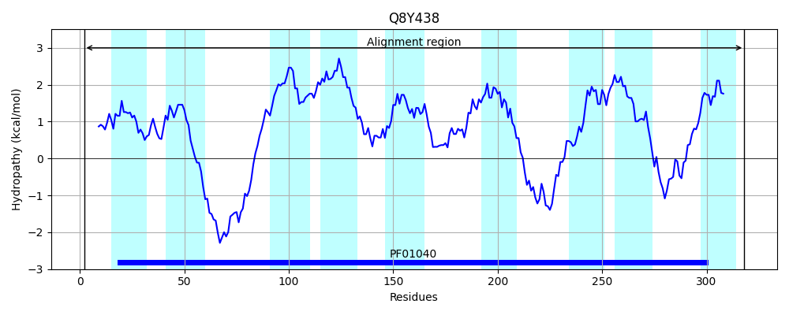
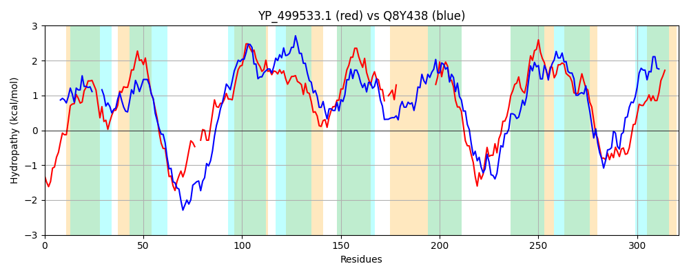

Hit Accession: Q8Y438
Hit TCID: 5.B.14.1.1
Hit Description: gnl|BL_ORD_ID|17060 gnl|TC-DB|Q8Y438|5.B.14.1.1 Lmo2635 protein OS=Listeria monocytogenes serovar 1/2a (strain ATCC BAA-679 / EGD-e) OX=169963 GN=lmo2635 PE=4 SV=1
Mach Len: 321
e:0.000000
Query TMS Count : 9
Hit TMS Count: 9
TMS-Overlap Score: 5.100000
Predicted Substrates:CHEBI:10545;electron
BLAST Alignment:
Score: 263 , Bit scores: 105 bits, E-value: 1.9e-26, Alignment length: 321, Percentage identity: 23
Query: 10 TVKKYWHLMRPHTLTASVVPVLVGTAASKIYFLGSEDHIKISLFIAMLLACLLIQAATNMFNEYYDYKKGLDDHESV--GIGGAIVRNGMSPELVLRLAIAFYILAAILGLFLAANSSFWLLPVGLVCMAVGYLYTGGPFPISWTPFGELFSGVFMGMFIIVIAFFIQTGNIQ-SYVIW-------------------LSVPIVITIGLINMANNIRDRVKDKASGRKTLPILLGKNASLTFMAIMYFIAYAFIVLTIIIKPGGSLFYLLALLSFPMPVKVIRRFKKNDTPPTMMPAMAAAGKTNTFFGLLYALGIYISAL 308
++ + L+ T ASV P ++GT ++ + D K + + + L+ T N Y DY+K D+H+ I + + V+ + +A LG++L + +L +G VC +G LYT GP P+S P GE+FSGV MG I +A ++ + + ++W +S+P + TI I +ANN+ D +D + R TLP +G+ + +Y+ ++ +V+++ I + L + +P+ +++ K+ T + + N +L A+ + + L
Sbjct: 2 SIPSFLKLVEIQTKIASVFPFMLGT----LFVVYQYDMFKPINTLIIFGSMLIFDLTTTAINNYMDYRKATDNHDYDYRTTSNVIGQEQIPVRTVIITIFLMFFIATGLGVWLVFRTDLLVLLIGFVCFCIGILYTFGPVPLSRMPLGEIFSGVTMGFGIFFLAVYVNAYDAGIANLLWQGEMVTIQFNLIEIIRIGVVSLPCIFTIANIMLANNLCDLDEDIRNHRYTLPYYIGRKMGVLLFNTLYYASFLAVVVSVAINFLHPIMLLSLITIYPVYRNLVKFNKEQVKSKTFVIGIRNFVLINATLTILMAVSVVLQQL 318 | Protein Hydropathy Plots: |
|---|
|  |  |
Pairwise Alignment-Hydropathy Plot:
|
|---|
|  |